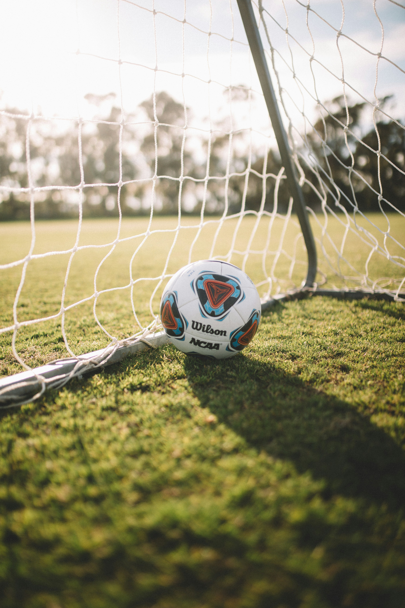

RANKED: THE TOP 4 LEAGUES IN EUROPEAN FOOTBALL (2023/24)
-
 Premier Leaguethe Premier League retains top spot in our rankings.
Premier Leaguethe Premier League retains top spot in our rankings. - La LigaOf course, Barcelona and Real Madrid are among the leading contenders for Europe’s premier prize in 2024. La Liga teams will inevitably be in the Europa League mix, too.
-
 Serie AAfter half-a-dozen false dawns, Serie A might finally be back. Three Italian teams reached the last eight of the 2022-23 Champions League with Milan and Inter meeting in the semis.
Serie AAfter half-a-dozen false dawns, Serie A might finally be back. Three Italian teams reached the last eight of the 2022-23 Champions League with Milan and Inter meeting in the semis. -
 BundesligaNot so long ago, it was reasonable to pit the Bundesliga up against the Premier League.
BundesligaNot so long ago, it was reasonable to pit the Bundesliga up against the Premier League.